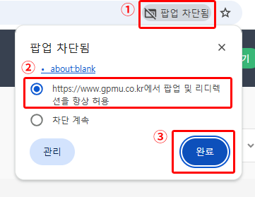
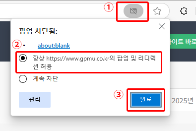

팝업차단 해지 방법
1. 크롬(Chrome)
① 주소창에 있는 팝업차단 아이콘을 클릭해 주세요.
②
'https://www.gpmu.co.kr에서 팝업 및 리디렉션을 항상 허용'
을 체크합니다.
③ 완료 버튼을 클릭합니다.

2. 엣지(Edge)
① 주소창에 있는 팝업차단 아이콘을 클릭해 주세요.
②
'항상 https://www.gpmu.co.kr의 팝업 및 리디렉션 허용'
을 체크합니다.
③ 완료 버튼을 클릭합니다.

※ 인터넷 익스플로러(Internet Explorer)는 서비스 중단되어 크롬(Chrome),엣지(Edge)를 사용해 주세요